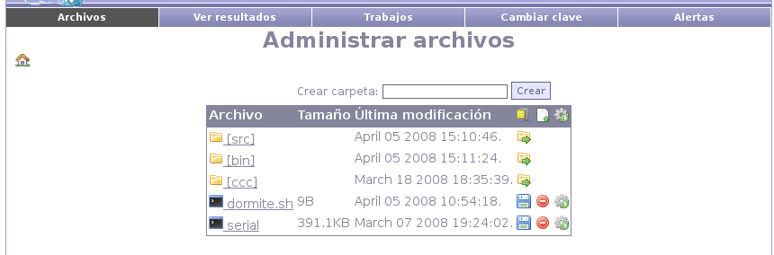
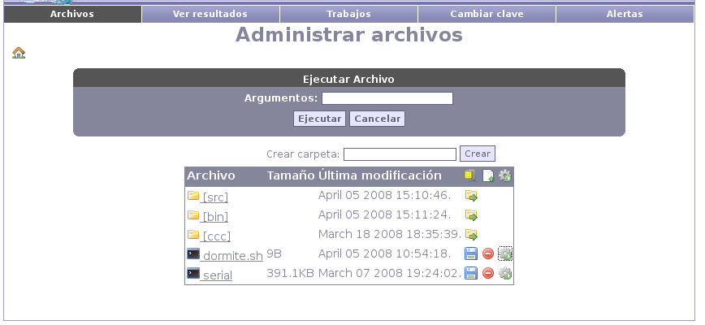

Next: Salida del ejecutable Up: Fenton - Manual de Previous: Ingreso al sitio Contents
Desde la página de administración de archivos estarán las funcionalidades más usuales para el usuario final.
En primer lugar podrá subir archivos individualmente mediante el botón de ``nuevo'' (segundo botón en la barra). A continuación se mostrará un espacio para seleccionar el archivo y un botón de aceptar. Si en lugar de un archivo corriente se seleciona un archivo zip, el mismo será automáticamente descomprimido en la carpeta en que se encuentre el usuario.
Los archivos creados pueden ser borrados, con la salvedad de que las carpetas deben estar vacías para poder ser eliminadas.
El usuario podrá a su vez descargar un archivo zip con el contenido del proyecto presionando el primer botón de la barra.

El tercer botón en la barra da la opción de ejecutar un makefile o el comando mpicc, permitiendo además el pasaje de argumentos.
Los archivos ejecutables tendrán una tercera opción (ademas de descargar y eliminar) que será la de ejecución. Presionando este botón, se desplegará un campo a rellenar con los argumentos de ejecución (opcional) y la opción de ejecutar. Luego de aceptar, se mostrará la página de resultados con la salida del ejecutable.

Santiago Iturriaga 2008-05-26